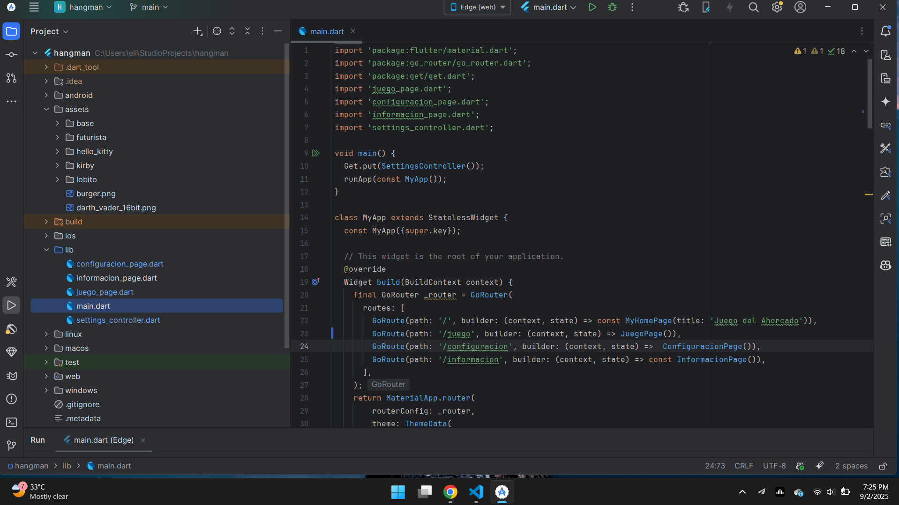
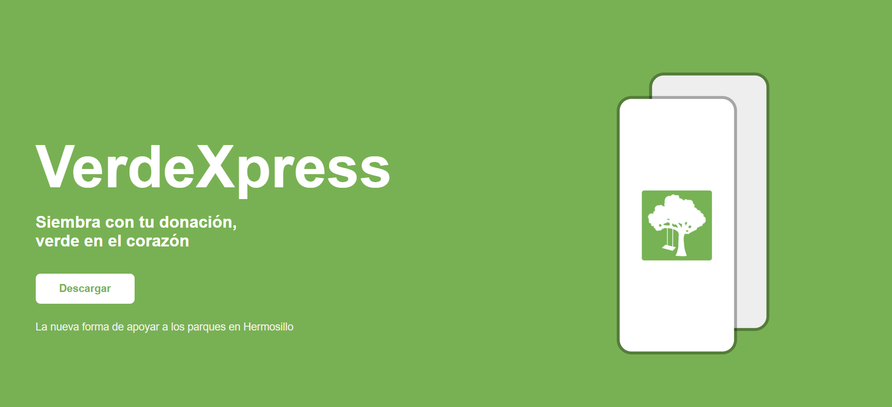

Estudiante de Ingeniería en Sistemas de Información
Galería
Aprendiendo Flutter
Este semestre (2025-2) estoy desarrollando mi segunda aplicación móvil, esta vez para la materia de Desarrollo de Aplicaciones Móviles, anteriormente hice una app nativa para android, en cambio, esta es mi primera vez haciendo una app híbrida y también mi primera vez usando Dart, estamos haciendo un juego de el ahorcado, el cual el profesor consideró el equivalente a un "Hola Mundo" para conocer cómo funciona Flutter.

Captura de pantalla de la aplicación móvil que estoy desarrollando en Flutter
VerdeXpress
VerdeXpress fue un proyecto de aplicación móvil desarrollada en conjunto con otros compañeros para la materia de Prácticas de Desarrollo de Sistemas 3, durante el semestre 2025-1. Su principal propósito era impulsar la conservación de áreas verdes en Hermosillo. Las herramientas utilizadas fueron Kotlin, Firebase (Auth y Firestore) y Supabase (Storage y Edge Functions).

Captura de pantalla de la landing page de VerdeXpress